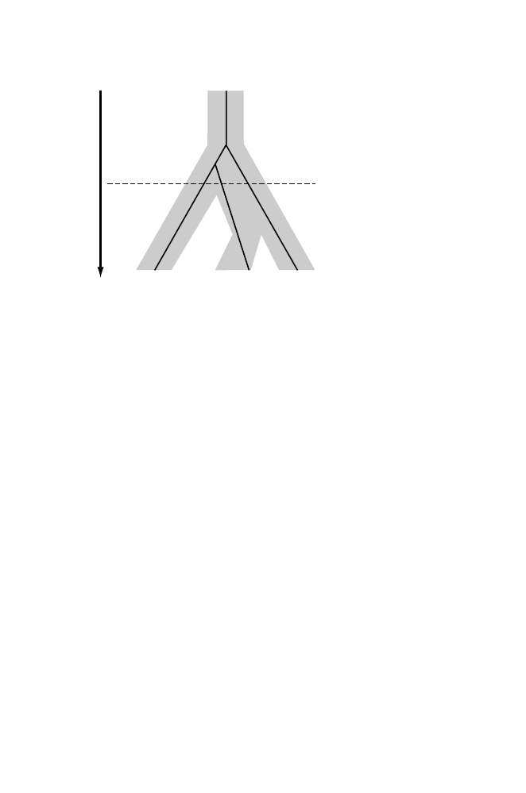

362
12 Inferring the Past: Phylogenetic Trees
Gene 1
Gene 2
Gene 3
T
ime
Gene tree topology:
((1,2),3)
Species tree topology:
(1,(2,3))
Species 1
Species 2
Species 3
Fig. 12.7.
Distinction between gene trees and species trees. The thick black lines
denote the gene tree constructed from homologous regions of the same gene found
in species 1, 2, and 3. The shaded bands represent the species tree. Underlying this
diagram is the concept that species are represented by populations, which at any
time may have multiple alleles for any gene. Genes transmitted to the next generation
are sampled from these populations. For example, at the time corresponding to the
dashed line, there are three alleles of the gene present in a single species. The allele
for gene 2 that became fixed in species 2 actually diverged later than the allele that
became fixed in species 3. Mechanisms of sampling of alleles from populations are
discussed in Chapter 13.
Goldman N (1993) Statistical tests of models of DNA substitution.
Journal
of Molecular Evolution
36:182–198.
Hahn BH, Shaw GM, De Cock KM, Sharp PM (2000) AIDS as a zoonosis:
Scientific and public health implications.
Science
287:607–614.
Hillis DM, Moritz C, Mable BK (1996)
Molecular Systematics
(2nd edition).
Sunderland, MA: Sinauer.
Huelsenbeck JP, Rannala B (1997) Phylogenetic methods come of age: Testing
hypotheses in an evolutionary context.
Science
276:227–232.
Huelsenbeck JP, Ronquist F, Nielsen R, Bollback JP (2001) Bayesian inference
of phylogeny and its impact on evolutionary biology.
Science
294:2310–
2314.
Ingman M, Kaessmann H, P¨
a¨
abo S, Gyllensten U (2000) Mitochondrial
genome variation and the origin of modern humans.
Nature
408:708–713.
Yang Z (1996) Among site rate variation and its impact on phylogenetic anal-
yses.
Trends in Ecology and Evolution
11:367–372.
Freely available software programs:
http://evolution.genetics.washington.edu/phylip/software.html
Site for
PHYLIP
, maintained by Joe Felsenstein.